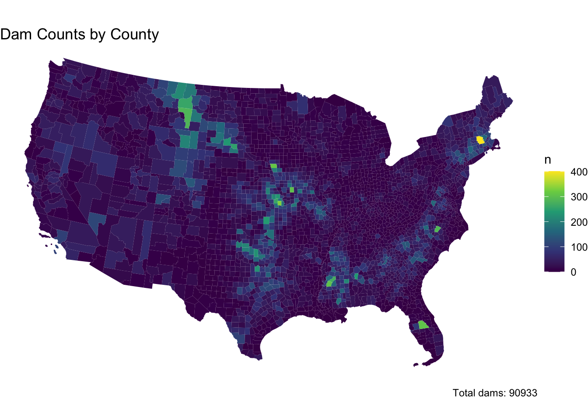
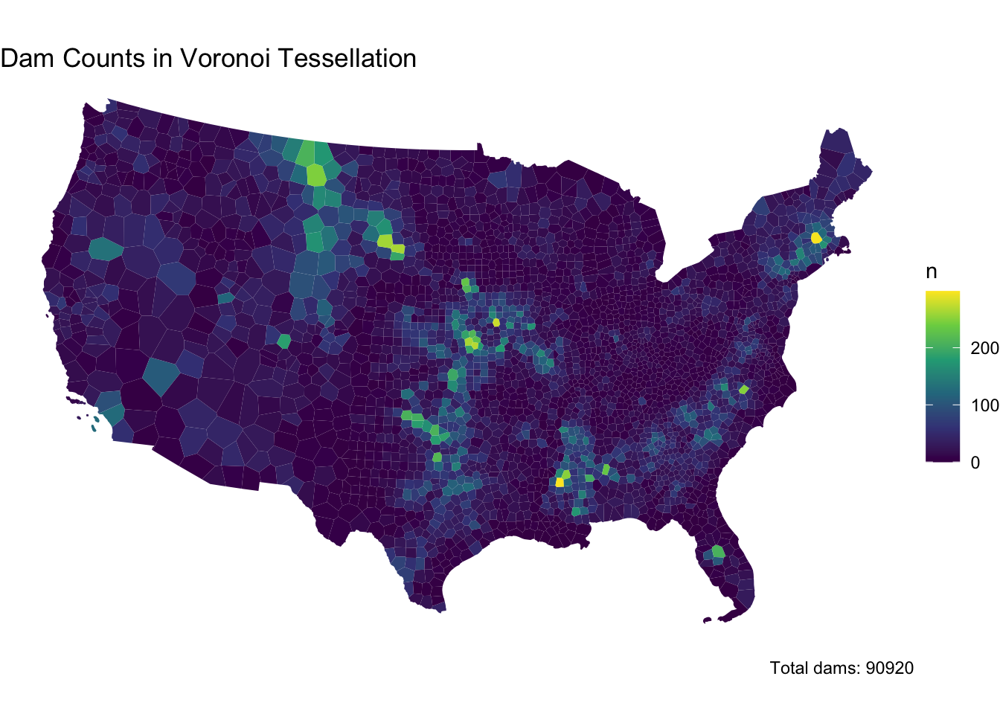
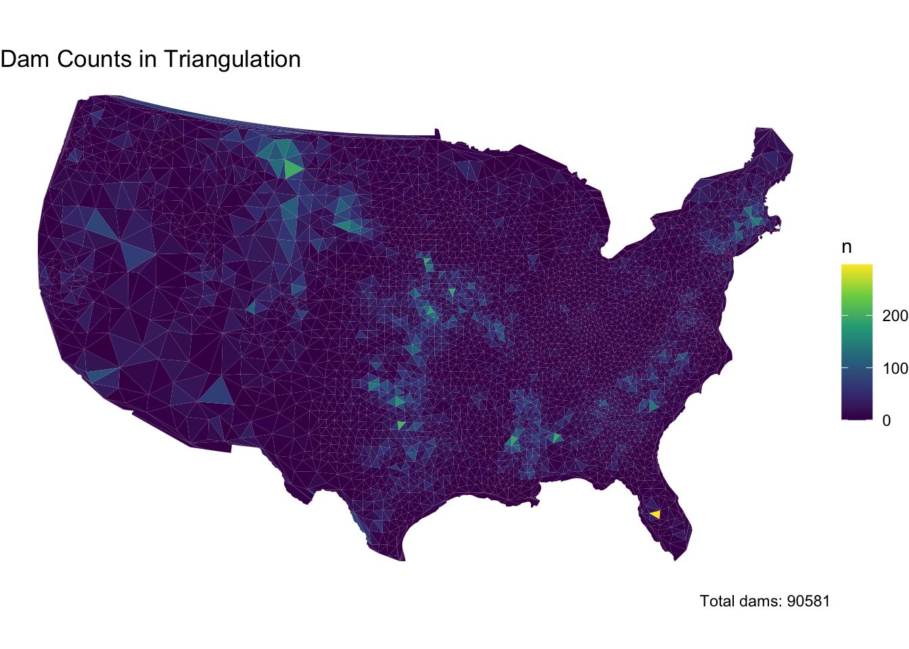
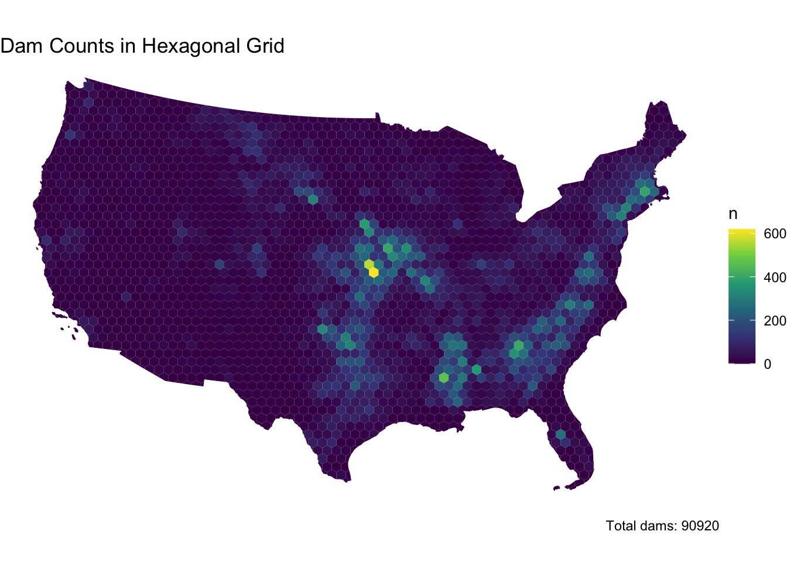

#install.packages("remotes")#remotes::install_github("ropensci/USAboundaries")#remotes::install_github("ropensci/USAboundariesData")#remotes::install_github("ropenscilabs/rnaturalearthdata")# spatial data sciencelibrary(tidyverse)
── Attaching core tidyverse packages ──────────────────────── tidyverse 2.0.0 ──
✔ dplyr 1.1.4 ✔ readr 2.1.5
✔ forcats 1.0.0 ✔ stringr 1.5.1
✔ ggplot2 3.5.2 ✔ tibble 3.2.1
✔ lubridate 1.9.4 ✔ tidyr 1.3.1
✔ purrr 1.0.4
── Conflicts ────────────────────────────────────────── tidyverse_conflicts() ──
✖ dplyr::filter() masks stats::filter()
✖ dplyr::lag() masks stats::lag()
ℹ Use the conflicted package (<http://conflicted.r-lib.org/>) to force all conflicts to become errors
Code
library(sf)
Linking to GEOS 3.13.0, GDAL 3.8.5, PROJ 9.5.1; sf_use_s2() is TRUE
Code
library(units)
udunits database from /Library/Frameworks/R.framework/Versions/4.5-x86_64/Resources/library/units/share/udunits/udunits2.xml
Warning: st_centroid assumes attributes are constant over geometries
Code
# Union centroids into a MULTIPOINTmultipoint <-st_union(county_centroids)
Step 1.3
Tessellations/Coverage’s describe the extent of a region with geometric shapes, called tiles, with no overlaps or gaps.
Tiles can range in size, shape, area and have different methods for being created.
Some methods generate triangular tiles across a set of defined points (e.g. voroni and delauny triangulation)
Others generate equal area tiles over a known extent (st_make_grid)
For this lab, we will create surfaces of CONUS using using 4 methods, 2 based on an extent and 2 based on point anchors:
Tessellations :
st_voroni: creates voroni tessellation
st_traingulate: triangulates set of points (not constrained)
Coverage’s:
st_make_grid: Creates a square grid covering the geometry of an sf or sfc object
st_make_grid(square = FALSE): Create a hexagonal grid covering the geometry of an sf or sfc object
The side of coverage tiles can be defined by a cell resolution or a specified number of cell in the X and Y direction
For this step:
Make a voroni tessellation over your county centroids (MULTIPOINT) Make a triangulated tessellation over your county centroids (MULTIPOINT) Make a gridded coverage with n = 70, over your counties object Make a hexagonal coverage with n = 70, over your counties object In addition to creating these 4 coverage’s we need to add an ID to each tile.
To do this:
add a new column to each tessellation that spans from 1:n().
Remember that ALL tessellation methods return an sfc GEOMETRYCOLLECTION, and to add attribute information - like our ID - you will have to coerce the sfc list into an sf object (st_sf or st_as_sf)
Last, we want to ensure that our surfaces are topologically valid/simple.
To ensure this, we can pass our surfaces through st_cast.
Remember that casting an object explicitly (e.g. st_cast(x, “POINT”)) changes a geometry
If no output type is specified (e.g. st_cast(x)) then the cast attempts to simplify the geometry.
If you don’t do this you might get unexpected “TopologyException” errors.
If you plot the above tessellations you’ll see the triangulated surfaces produce regions far beyond the boundaries of CONUS.
We need to cut these boundaries to CONUS border.
To do this, we will call on st_intersection, but will first need a geometry of CONUS to serve as our differenciating feature. We can get this by unioning our existing county boundaries.
Code
conus_boundary <-st_union(counties)
Step 1.5
With a single feature boundary, we must carefully consider the complexity of the geometry. Remember, the more points our geometry contains, the more computations needed for spatial predicates our differencing. For a task like ours, we do not need a finely resolved coastal boarder.
To achieve this:
Simplify your unioned border using the Visvalingam algorithm provided by rmapshaper::ms_simplify.
Choose what percentage of vertices to retain using the keep argument and work to find the highest number that provides a shape you are comfortable with for the analysis:
Once you are happy with your simplification, use the mapview::npts function to report the number of points in your original object, and the number of points in your simplified object.
How many points were you able to remove? What are the consequences of doing this computationally?
Finally, use your simplified object to crop the two triangulated tessellations with st_intersection:
# With keep = 0.1, the points from conus_boundary to conus_simple went from 11292 to 1145 or 10 percent of the total points# Simplifying the boundary reduces the number of vertices, which greatly speeds up spatial operations like intersections and overlays. This is especially important for large datasets, as it can reduce computation time from minutes to seconds. The trade-off, however, is a less detailed coastline, but for most large-scale analyses, this loss of detail is usually fairly acceptable.# Clip each tessellation to the CONUS boundaryvoronoi_sf_clipped <-st_intersection(voronoi_sf, conus_simple)
Warning: attribute variables are assumed to be spatially constant throughout
all geometries
Warning: attribute variables are assumed to be spatially constant throughout
all geometries
Step 1.6
The last step is to plot your tessellations. We don’t want to write out 5 ggplots (or mindlessly copy and paste 😄)
Instead, lets make a function that takes an sf object as arg1 and a character string as arg2 and returns a ggplot object showing arg1 titled with arg2.
The form of a function is:
name = function(arg1, arg2) {
… code goes here …
}
For this function:
The name can be anything you chose, arg1 should take an sf object, and arg2 should take a character string that will title the plot
In your function, the code should follow our standard ggplot practice where your data is arg1, and your title is arg2
The function should also enforce the following:
a white fill
a navy border
a size of 0.2
`theme_void``
a caption that reports the number of features in arg1
You will need to paste character stings and variables together.
Code
plot_tessellation <-function(sf_obj, plot_title) {ggplot() +geom_sf(data = sf_obj, fill ="white", color ="navy", size =0.2) +theme_void() +labs(title = plot_title,caption =paste("Number of features:", nrow(sf_obj)) )}
Step 1.7
Use your new function to plot each of your tessellated surfaces and the original county data (5 plots in total):
Code
# Plot original countiesplot_tessellation(counties, "CONUS Counties")
In this question, we will write out a function to summarize our tessellated surfaces. Most of this should have been done in your daily assignments.
Step 2.1
First, we need a function that takes a sf object and a character string and returns a data.frame.
For this function:
The function name can be anything you chose, arg1 should take an sf object, and arg2 should take a character string describing the object
In your function, calculate the area of arg1; convert the units to km2; and then drop the units
Next, create a data.frame containing the following:
text from arg2
the number of features in arg1
the mean area of the features in arg1 (km2)
the standard deviation of the features in arg1
the total area (km2) of arg1
Return this data.frame
Code
# Function to Summarize Tessellated Surfacessummarize_surface <-function(sf_obj, desc) {# Calculate area, convert to km^2, and drop units area_km2 <-st_area(sf_obj) %>%set_units(km^2) %>%drop_units()# Create data framedata.frame(description = desc,n_features =nrow(sf_obj),mean_area_km2 =mean(area_km2),sd_area_km2 =sd(area_km2),total_area_km2 =sum(area_km2) )}
Step 2.2
Use your new function to summarize each of your tessellations and the original counties.
Step 2.3
Multiple data.frame objects can bound row-wise with bind_rows into a single data.frame
For example, if your function is called sum_tess, the following would bind your summaries of the triangulation and voroni object.
Step 2.4
Once your 5 summaries are bound (2 tessellations, 2 coverage’s, and the raw counties) print the data.frame as a nice table using knitr/kableExtra.
Step 2.5
Comment on the traits of each tessellation. Be specific about how these traits might impact the results of a point-in-polygon analysis in the contexts of the modifiable areal unit problem and with respect computational requirements.
Code
# Use the summarize_surface function to summarize each tessellationcounties_summary <-summarize_surface(counties, "CONUS Counties")voronoi_summary <-summarize_surface(voronoi_sf_clipped, "Voronoi Tessellation")tri_summary <-summarize_surface(tri_sf_clipped, "Triangulation")grid_summary <-summarize_surface(grid_sf_clipped, "Square Grid (n=70)")hex_summary <-summarize_surface(hex_sf_clipped, "Hexagonal Grid (n=70)")# Combine the summaries into a single data frameall_summaries <-bind_rows( counties_summary, voronoi_summary, tri_summary, grid_summary, hex_summary)# Print the combined summary tableprint(all_summaries)
knitr::kable(all_summaries, caption ="Summary of Tessellated Surfaces")
Summary of Tessellated Surfaces
description
n_features
mean_area_km2
sd_area_km2
total_area_km2
CONUS Counties
3108
2605.050
3443.7121
8096496
Voronoi Tessellation
3108
2604.757
2918.2752
8095586
Triangulation
6198
1290.332
1598.2870
7997475
Square Grid (n=70)
3131
2585.623
573.7092
8095586
Hexagonal Grid (n=70)
2309
3506.100
837.4367
8095586
Original Counties These irregular shapes, derived from historical and administrative boundaries, vary in size across the CONUS. Because the shapes and sizes vary, these boundaries are highly susceptible to the modifiable areal unit problem, potentially influencing point-in-polygon results, but point-in-polygon analysis is efficient.
Voronoi Tessellation Adaptive cells are constructed based on county centroid proximity, resulting in compact and locally uniform areas. With the objective boundaries, there is less of a zoning effect than with county boundaries, though it remains computationally intensive in creation due to the calculation of proximities.
Triangulation This method generates a network of triangles dependent on input point distribution. High sensitivity to input point location can cause a shift in point-in-polygon results.
Square Grid The uniform squares are simple, but it is highly sensitive to placement. Because of the uniform design, placement and size are very sensitive to the modifiable areal unit problem.
Hexagonal Grid These offer more consistent neighbor distances with a design that is less sensitive to directional bias, yet more complicated in design. It’s more complicated in design, although it’s still generally more efficient than the square grid.
Question 3:
The data we are going to analysis in this lab is from US Army Corp of Engineers National Dam Inventory (NID). This dataset documents ~91,000 dams in the United States and a variety of attribute information including design specifications, risk level, age, and purpose.
For the remainder of this lab we will analysis the distributions of these dams (Q3) and their purpose (Q4) through using a point-in-polygon analysis.
Step 3.1
In the tradition of this class - and true to data science/GIS work - you need to find, download, and manage raw data. While the raw NID data is no longer easy to get with the transition of the USACE services to ESRI Features Services, I staged the data in the resources directory of this class. To get it, navigate to that location and download the raw file into you lab data directory.
Return to your RStudio Project and read the data in using the readr::read_csv After reading the data in, be sure to remove rows that don’t have location values (!is.na()) Convert the data.frame to a sf object by defining the coordinates and CRS Transform the data to a CONUS AEA (EPSG:5070) projection - matching your tessellation Filter to include only those within your CONUS boundary
Code
dams = readr::read_csv('data/NID2019_U.csv')
Rows: 91457 Columns: 69
── Column specification ────────────────────────────────────────────────────────
Delimiter: ","
chr (44): DAM_NAME, OTHER_DAM_NAME, DAM_FORMER_NAME, NIDID, SECTION, COUNTY,...
dbl (24): RECORDID, STATEID, LONGITUDE, LATITUDE, DISTANCE, YEAR_COMPLETED, ...
lgl (1): URL_ADDRESS
ℹ Use `spec()` to retrieve the full column specification for this data.
ℹ Specify the column types or set `show_col_types = FALSE` to quiet this message.
Following the in-class examples develop an efficient point-in-polygon function that takes:
points as arg1, polygons as arg2, The name of the id column as arg3 The function should make use of spatial and non-spatial joins, sf coercion and dplyr::count. The returned object should be input sf object with a column - n - counting the number of points in each tile.
Code
count_points_in_polygons <-function(points, polygons, id_col) {# Convert to sf if not alreadyif (!inherits(points, "sf")) points <-st_as_sf(points)if (!inherits(polygons, "sf")) polygons <-st_as_sf(polygons)# Perform spatial intersection intersections <-st_intersects(polygons, points)# Count intersections and add to polygons polygons %>%mutate(n =lengths(intersections)) %>%select(all_of(id_col), n, geometry)}
Step 3.3
Apply your point-in-polygon function to each of your five tessellated surfaces where:
Your points are the dams Your polygons are the respective tessellation The id column is the name of the id columns you defined.
Code
# Ensure counties have an ID column (if not already created)counties <- counties %>%mutate(id =row_number())# Apply function to all tessellationscounties_dams <-count_points_in_polygons(dams2, counties, "id")voronoi_dams <-count_points_in_polygons(dams2, voronoi_sf_clipped, "id")tri_dams <-count_points_in_polygons(dams2, tri_sf_clipped, "id")grid_dams <-count_points_in_polygons(dams2, grid_sf_clipped, "id")hex_dams <-count_points_in_polygons(dams2, hex_sf_clipped, "id")
Step 3.4
Lets continue the trend of automating our repetitive tasks through function creation. This time make a new function that extends your previous plotting function.
For this function:
The name can be anything you chose, arg1 should take an sf object, and arg2 should take a character string that will title the plot
The function should also enforce the following:
the fill aesthetic is driven by the count column n
the col is NA
the fill is scaled to a continuous viridis color ramp
theme_void
a caption that reports the number of dams in arg1 (e.g. sum(n))
You will need to paste character stings and variables together.
Code
plot_count_surface <-function(sf_obj, plot_title) {ggplot(data = sf_obj) +geom_sf(aes(fill = n), color =NA) +# No border colorscale_fill_viridis_c(option ="viridis") +# Continuous viridis color ramptheme_void() +labs(title = plot_title,caption =paste("Total dams:", sum(sf_obj$n, na.rm =TRUE)) )}
Step 3.5
Apply your plotting function to each of the 5 tessellated surfaces with Point-in-Polygon counts:
Code
# Plot dam counts for each tessellationplot_count_surface(counties_dams, "Dam Counts by County")

Code
plot_count_surface(voronoi_dams, "Dam Counts in Voronoi Tessellation")

Code
plot_count_surface(tri_dams, "Dam Counts in Triangulation")

Code
plot_count_surface(grid_dams, "Dam Counts in Square Grid")
Code
plot_count_surface(hex_dams, "Dam Counts in Hexagonal Grid")

Step 3.6
Comment on the influence of the tessellated surface in the visualization of point counts. How does this related to the MAUP problem. Moving forward you will only use one tessellation, which will you chose and why?
While there is not “right” answer, justify your selection here.
The choice of tessellation affects how dam counts are visualized because different polygon shapes and sizes can change the spatial aggregation of points. This relates directly to MAUP, where results often depend on the scale as well as the zoning of spatial units. I would choose the hexagonal grid tesselation because it provides uniform, compact cells with less directional bias than squares, making spatial patterns clearer and more consistent. It balances computational efficiency and spatial representation well, minimizing MAUP effects compared to irregular counties or variable Voronoi cells.
Question 4:
The NID provides a comprehensive data dictionary here. In it we find that dam purposes are designated by a character code.
In the data dictionary, we see a dam can have multiple purposes.
In these cases, the purpose codes are concatenated in order of decreasing importance. For example, SCR would indicate the primary purposes are Water Supply, then Flood Control, then Recreation.
A standard summary indicates there are over 400 unique combinations of dam purposes:
Code
unique(dams2$PURPOSES) %>%length()
[1] 494
To overcome this data structure limitation, we can identify how many dams serve each purpose by splitting the PURPOSES values (strsplit) and tabulating the unlisted results as a data.frame. Effectively this is double/triple/quadruple counting dams bases on how many purposes they serve:
Joining with by = join_by(abbr) The result of this would indicate:
Step 4.1
Your task is to create point-in-polygon counts for at least 4 of the above dam purposes:
You will use grepl to filter the complete dataset to those with your chosen purpose
Remember that grepl returns a boolean if a given pattern is matched in a string
grepl is vectorized so can be used in dplyr::filter
Comment of geographic distribution of dams you found. Does it make sense? How might the tessellation you chose impact your findings? How does the distribution of dams coincide with other geographic factors such as river systems, climate, ect?
I thought this exercise was really interesting! It is clear to me that, especially for flood control in the Mississippi River Basin, most dams occur in areas with major river systems. For water supply dams, of course we see a grouping in Colorado, California, and potentially Eastern Montana and into the Dakotas. I was surprised, but not really, by how many dams for recreation were in the East. There were little to no rec dams West of Colorado. Hydroelectric dams were very prominent in the Northeast and Northwest, with the most occurring in Northern California. I feel like the hexagonal tessellation I chose did a good job at minimizing distortion and MAUP impacts but I would be interested in experimenting with other tesselations for this application.
Question 5:
You have also been asked to identify the largest, at risk, flood control dams in the country
You must also map the Mississippi River System - This data is available here - Download the shapefile and unzip it into your data directory. - Use read_sf to import this data and filter it to only include the Mississippi SYSTEM
To achieve this:
Create an interactive map using leaflet to show the largest (NID_STORAGE); high-hazard (HAZARD == “H”) dam in each state
The markers should be drawn as opaque, circle markers, filled red with no border, and a radius set equal to the (NID_Storage / 1,500,000) The map tiles should be selected from any of the tile providers A popup table should be added using leafem::popup and should only include the dam name, storage, purposes, and year completed. The Mississippi system should be added at a Polyline feature.
Code
# Read the river shapefilemiss_river <-read_sf("data/majorrivers_0_0/MajorRivers.shp") %>%filter(grepl("Mississippi", SYSTEM, ignore.case =TRUE))# Filter for high-hazard, flood control damsdams_fc_hh <- dams2 %>%filter(grepl("C", PURPOSES), HAZARD =="H")# For each state, select the dam with the largest storagelargest_fc_hh <- dams_fc_hh %>%group_by(STATE) %>%filter(NID_STORAGE ==max(NID_STORAGE, na.rm =TRUE)) %>%ungroup()largest_fc_hh <- largest_fc_hh %>%mutate(popup =paste0("<b>Name:</b> ", DAM_NAME, "<br>","<b>Storage:</b> ", format(NID_STORAGE, big.mark =","), "<br>","<b>Purposes:</b> ", PURPOSES, "<br>","<b>Year Completed:</b> ", YEAR_COMPLETED ) )
Code
# Transform dams and river system to WGS84dams_wgs84 <-st_transform(largest_fc_hh, 4326)miss_river_wgs84 <-st_transform(miss_river, 4326)library(leaflet)library(leafem)leaflet() %>%addProviderTiles(providers$CartoDB.Positron) %>%addPolylines(data =st_transform(miss_river, 4326),color ="blue",weight =3,opacity =0.7,group ="Mississippi River" ) %>%addCircleMarkers(data = dams_wgs84,radius =~NID_STORAGE /1500000,fillColor ="red",fillOpacity =1,color =NA,popup =~popup )